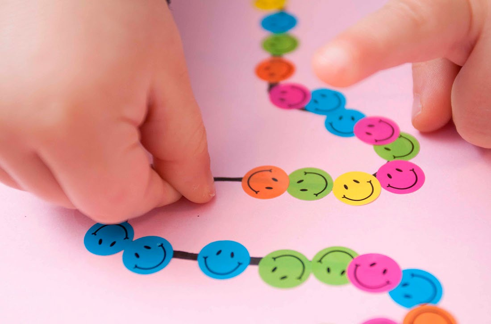
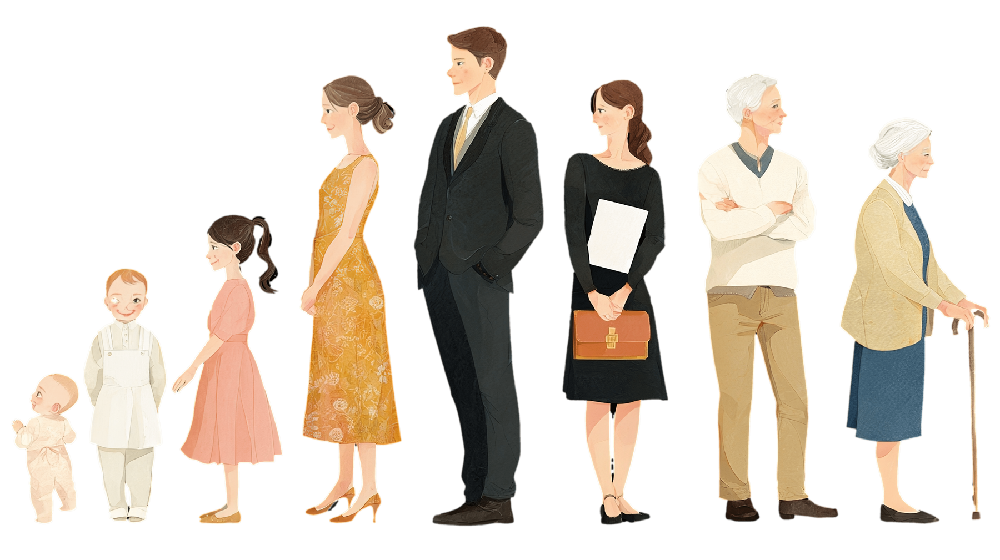
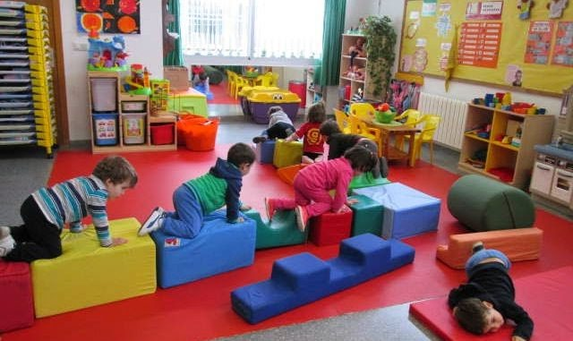

Manipular con precisión usando pequeños grupos musculares (dedos).
Óculo-manual · Óculo-pédica
Medellín, Colombia — 2026 | Edición 01 | SENA


 Edición 01
Edición 01
Editorial · Presentación
El cuerpo es el primer aula: allí se escriben los hábitos de toda una vida.
Esta revista nació de una pregunta sencilla: ¿qué ocurre dentro de nosotros cuando nos movemos? La respuesta recorre estas páginas, desde las primeras etapas del desarrollo —cuando gatear y caminar ya son aprendizaje— hasta la técnica depurada del deporte de rendimiento.
En el camino encontrarás la motricidad fina y gruesa, las habilidades que se combinan en cada gesto, las capacidades coordinativas y físicas que sostienen el rendimiento y 26 tendencias deportivas para elegir la tuya. La educación física no es solo una asignatura: es donde el cuerpo piensa [UNESCO].
La OMS recomienda 60 min diarios de actividad moderada-vigorosa en la infancia y 150–300 min semanales en la vida adulta [OMS 2020]. Esta edición existe para acercarte a esa cifra —y para que el camino sea divertido.

 Resistencia
Resistencia
 Fuerza
Fuerza
 Juego
Juego
Alexander Castaño & Josué Valencia — editores
Etapas del desarrollo
Cada nivel se construye sobre el anterior: de la base sensorial a la especialización deportiva.
Base del desarrollo: Sistema nervioso · Reflejos · Tono muscular · Tacto · Propiocepción · Sistema vestibular
Control cefálico · Gateo · Sedestación · Marcha
Esquema corporal · Equilibrio · Coordinación · Lateralidad · Orientación espacial
Caminar · Correr · Saltar · Lanzar · Atrapar
Técnicas deportivas · Destrezas específicas
Deporte de rendimiento · Especialidad técnica · Entrenamiento estructurado

Habilidades motrices
La motricidad estudia el movimiento humano: sus características y su significado.

Manipular con precisión usando pequeños grupos musculares (dedos).

El cuerpo como totalidad: gatear, caminar, saltar.
Habilidades motrices: de lo básico a lo específico
 Básica
Básica
Caminar, correr, saltar, trepar. Autonomía y orientación espacial.
 Básica
Básica
Girar, equilibrarse, estirarse. Control postural y conciencia corporal.
 Básica
Básica
Lanzar, atrapar, patear. Precisión y toma de decisiones.

Combinan dos o más habilidades básicas en una sola acción.

Deportivas y no deportivas: técnica propia de cada disciplina.
Capacidades coordinativas · Capacidades físicas
Mantener o recuperar estabilidad.
Ubicarse en espacio y tiempo.
Organizar movimientos en secuencia.
Responder rápido ante estímulos.
Integrar movimientos en acción global.
Visión + ejecución con manos o pies.
Ajustar fuerza y precisión del gesto.
Modificar respuesta ante cambios del entorno.
Capacidades físicas condicionales

Sostener esfuerzo sin fatiga excesiva.

Amplitud de movimiento en tejidos blandos.

Acciones motrices en el menor tiempo.

Generar tensión muscular para mover o resistir.
Especial editorial
26 disciplinas para elegir con criterio, progresión y disfrute. ● Baja ● Media ● Alta intensidad
 Baja
Baja
Posturas, respiración y bienestar físico-mental.
Movimientos suaves para control y calma.
 Baja
Baja
Estiramientos para amplitud de movimiento.
 Baja
Baja
Conciencia corporal, equilibrio y estabilidad articular.
 Baja
Baja
Control del centro corporal, postura y estabilidad.
Abdomen, lumbar y pelvis. Estabilidad y postura.
Suspensión con peso corporal. Fuerza y coordinación.
 Alta
Alta
Golpes y patadas sin contacto. Energía y desestrés.
 Alta
Alta
Artes marciales y aeróbicos: cardio con golpes y patadas.
 Alta
Alta
Técnica, autoconfianza y precisión.
 Alta
Alta
Bicicleta estática. Resistencia cardiovascular guiada.
 Baja
Baja
Bajo impacto articular, alta resistencia.
 Media
Media
Baile latino grupal. Cardio, coordinación y diversión.
Especial editorial · continuación
● Baja ● Media ● Alta intensidad
 Media
Media
Secuencias continuas. Resistencia y coordinación.
 Media
Media
Ritmos latinos. Adherencia y cardio.
Plataforma escalonada. Coordinación y trabajo cardiovascular.
 Alta
Alta
30 minutos de alta intensidad. Fuerza y resistencia explosiva.
 Media
Media
Glúteos, abdomen y piernas. Tono y estabilidad.
 Media
Media
Barra y discos ligeros con música.
Core intenso: abdomen, glúteos y espalda en 30 minutos.
 Alta
Alta
Intervalos intensos con pausas. Máximo cardio.
 Alta
Alta
Cardio extremo con peso corporal. Resistencia al límite.
Movimientos naturales para la vida diaria. Fuerza global.
 Alta
Alta
Levantamientos, gimnasia y cardio integrados.
Circuitos de combate: disciplina, fuerza y resistencia extrema.
Ciclismo en sala con simulación de terrenos y resistencia.

Reflexión editorial
No existe una sola forma de moverse. Las tendencias deportivas son herramientas, no obligaciones. Lo importante es encontrar la actividad que motive y que sea adecuada para cada cuerpo y momento de la vida.


Contraportada · Créditos
Ficha de la publicación
RevistaMovimiento en Acción
AutoresAlexander Castaño · Josué Valencia
EdiciónNº 01 · 2026
InstituciónSENA
OrigenMedellín, Colombia
NaturalezaRevista digital · Proyecto académico

Hecho en Medellín, Colombia · 2026
Revista digital de Educación Física · Proyecto académico sin fines comerciales
Imágenes: banco de imágenes de uso libre · Fuentes: OMS · UNESCO
Medellín, Colombia — 2026 | Edición 01 | SENA